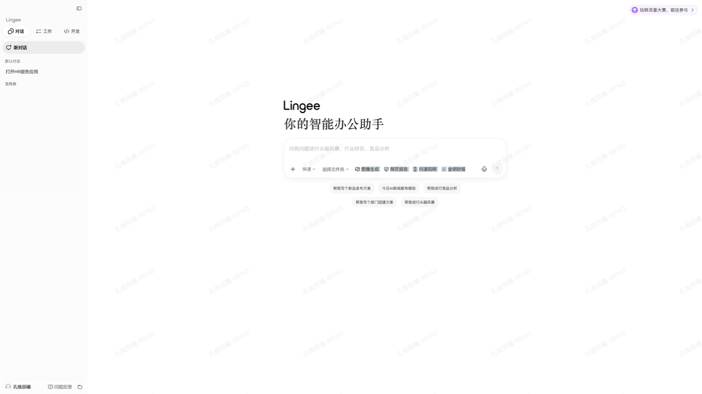
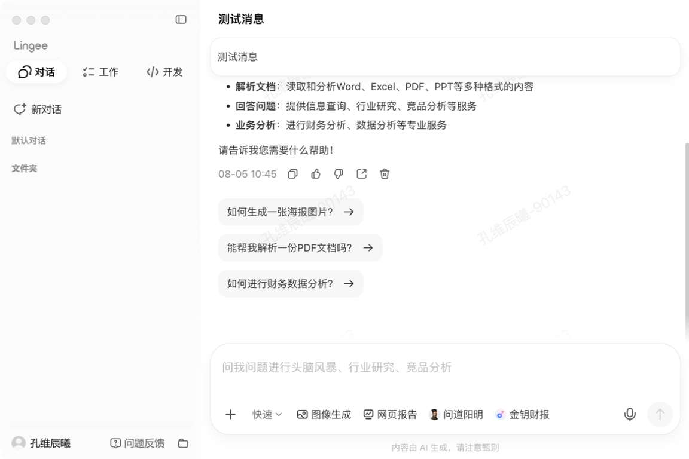
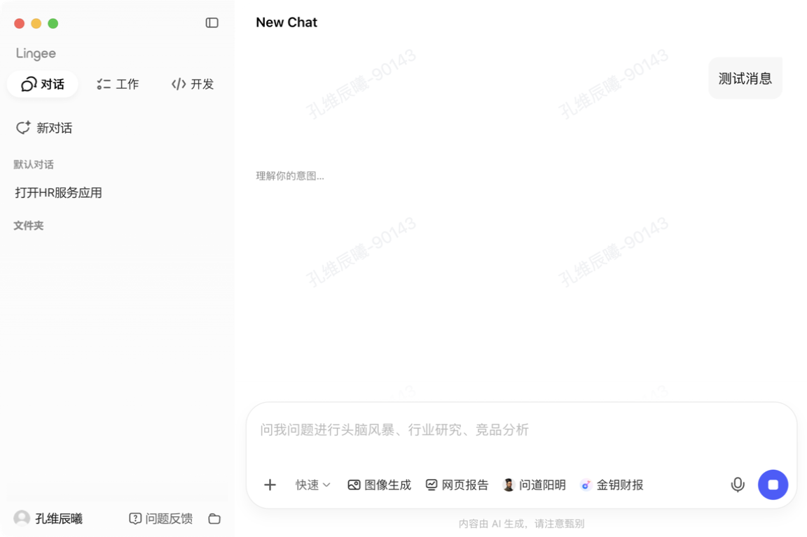
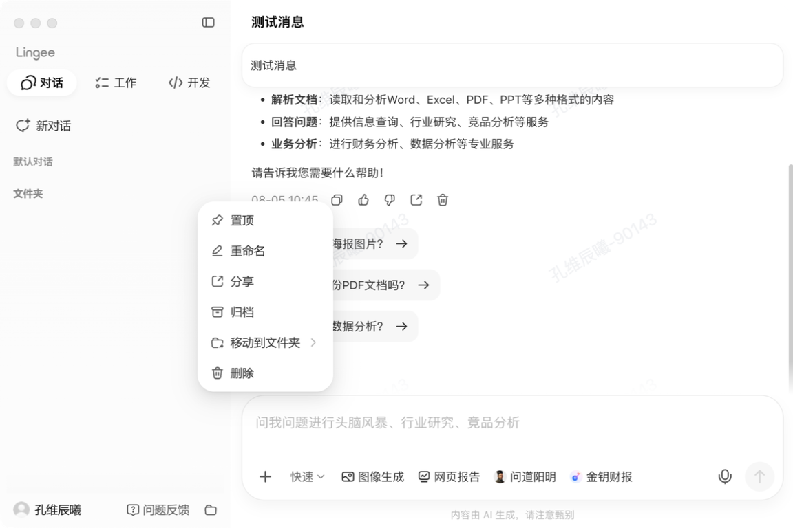
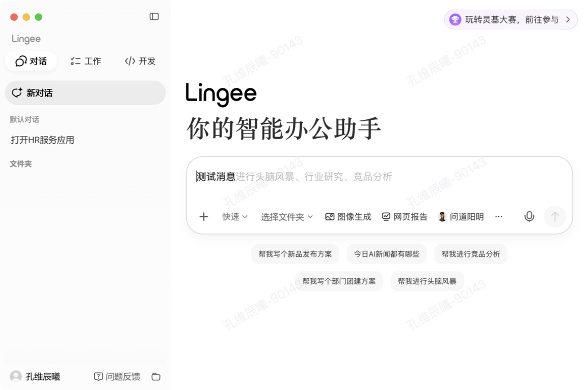
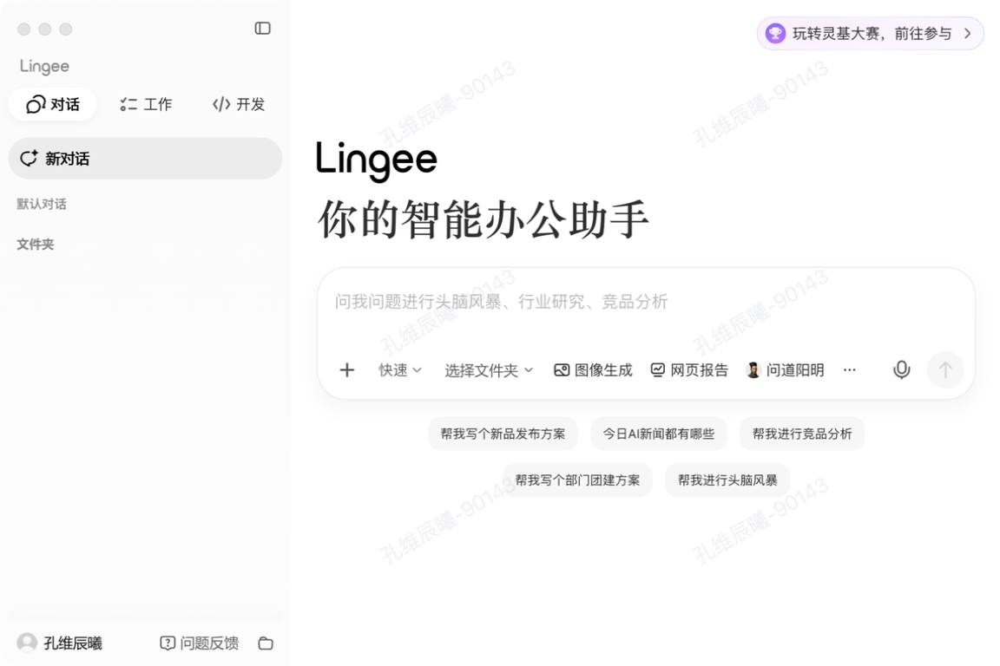
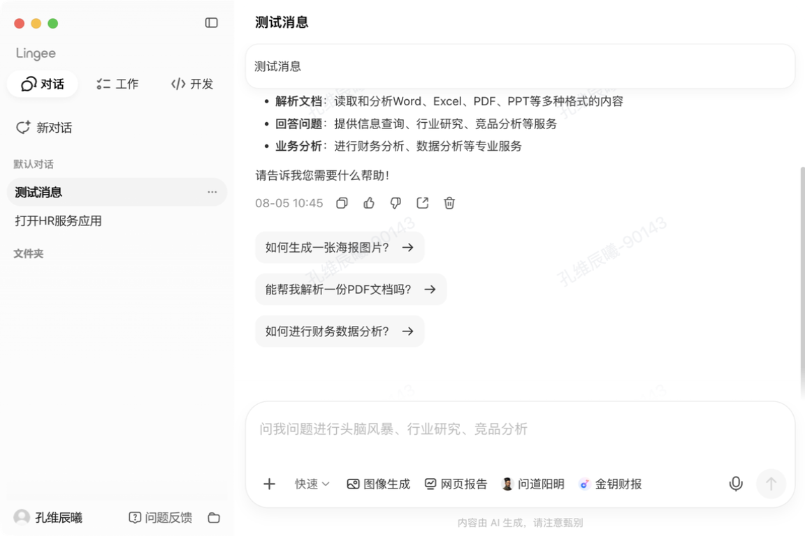

金蝶灵基 — 对话功能 · AI 走查报告 v2
综合评分
71
B · 良好
共发现 7 个问题，2 项表现正常。对话页面整体质量优于会议室预订，无严重问题，主要短板在响应式窗口限制和输入框焦点反馈。5 个维度本次未覆盖。
3 中等
4 轻微
2 正常
5 未覆盖维度
响应式布局 L1
50
设计规范对照 L1
80
极限边界 L2
未覆盖
暗黑模式 L2
未覆盖
空状态/错误 L2
60
焦点/键盘 L2
55
国际化 L3
未覆盖
无障碍 L3
60
Token 绑定 L3
未覆盖
Variant 完整性 L3
未覆盖
跨页面一致性 L3
未覆盖
BASE
基准状态
对话页面 · 默认窗口状态
左侧对话列表，右侧对话内容区（含 AI 欢迎页），底部输入框。窗口约 1280×800px。
L1
响应式布局
中等
响应式
#1 窗口最小宽度限制过大（~960px），无法覆盖窄屏场景
▼位置应用主窗口整体
表现尝试将窗口缩小到更小尺寸时，窗口保持约 960×640 无法继续缩小。无法测试分屏、窄窗口下的响应式布局。
影响用户在小屏幕或分屏场景下可能遇到布局问题但无法被验证。

规范基准：Lingee Spacing 基于
4px 网格。Figma Sidebar 定义了 3 个 scene=web 变体（chat/dev/Management），应有折叠态适配窄屏。建议：如产品要求支持窄窗口，需调整最小窗口宽度并增加响应式断点；如不支持，需在规范中明确桌面端最小尺寸要求。
轻微
响应式
#4 最大化/全屏状态下内容区域空白过多
▼表现最大化后，主输入区域仍保持较窄宽度并居中，左右两侧出现大量空白，信息密度偏低。

建议：设定合理
max-width，超宽屏下可展示更多推荐内容或侧边信息面板。
L1
设计规范对照
轻微
规范对照
#5 对话列表项信息维度不足
▼表现会话列表项只显示标题（如"测试消息"），未看到时间、最后一条消息预览。多会话场景下用户较难快速判断。

规范基准：Lingee Typography P3=
12px 用于辅助说明。列表项时间戳可使用 P3 字重。建议：列表项补充时间戳和最后一条消息预览（单行截断）。
L2
空状态与错误状态
轻微
状态
#7 AI 回复 loading 状态反馈较弱
▼表现发送消息后显示"理解你的意图…"文案，但没有明显 spinner 动画或进度反馈。等待时间较长时用户不确定是否仍在生成。

规范基准：Lingee Spin 组件提供标准加载动画；Skeleton 组件可用于内容预加载占位。
建议：增加加载动画（如呼吸灯、打字指示器），或使用 Lingee Spin 组件。
轻微
一致性
#6 桌面端右键上下文菜单不明显
▼表现点击"更多操作"按钮可弹出菜单（置顶、重命名、分享、归档、移动到文件夹、删除），但右键会话项未能唤起同样的上下文菜单。

建议：桌面端增加右键上下文菜单支持，与"更多操作"按钮菜单内容保持一致。
L2
焦点与键盘导航
中等
焦点
#2 输入框聚焦态主色描边不明显
▼位置首页输入框 / 对话页底部输入框
表现点击输入框后，边框仍为浅灰色，未观察到主色（蓝紫色）描边或高对比 focus ring。
影响键盘用户或低视力用户不易判断当前输入焦点，不利于无障碍体验。

规范基准：Lingee Input focus 态应为
border: #495DFF 1px（主色描边），默认态 border: rgba(0,0,0,0.08) 1px。实测聚焦后仍为浅灰描边，不符合规范。建议：聚焦态使用 Lingee 主色描边，增加 focus ring 阴影或边框对比度。
L3
无障碍 (a11y)
中等
无障碍
#3 空状态 placeholder 可访问性文本被拆成单字
▼位置新建对话空状态的输入框
表现可访问性树中 placeholder 文案被拆成多个单字节点（如"问/我/问/题/进/行……"），影响屏幕阅读器朗读。
影响屏幕阅读器用户听到逐字朗读而非完整语句；自动化测试工具难以通过文本定位元素。

规范基准：WCAG 2.1 要求可访问性名称为完整文本。
aria-label 或 placeholder 应为完整字符串，不得拆分为单字符节点。建议：优化 DOM/ARIA 结构，使 placeholder 或引导语作为完整文本节点暴露。
OK
表现正常项
正常
状态
输入框底部固定（sticky）表现正常，滚动无重叠
▼表现输入框固定在底部，滚动过程中没有内容与输入框重叠，右侧滚动条显示正常。

正常
规范对照
消息气泡用户/AI区分清晰，短文本渲染正常
▼表现用户消息位于右侧、AI 消息位于左侧，区分清晰。AI 回复包含列表、时间戳、操作按钮均渲染正常，间距基本符合 4px 网格。

规范基准：Lingee Spacing
4px 网格，消息间距基本一致。气泡区分发送方/接收方清晰。
L2
极限边界
本次未覆盖。建议后续补充：超长消息文本渲染、超长对话标题截断、大量消息列表性能。
L2
暗黑模式适配
本次未覆盖。建议切换 dark mode 后检查气泡颜色、输入框背景、文字对比度。
L3
国际化
本次未覆盖。Lingee UI 内置
zhCN/enUS 双语支持，建议切换英文后检查布局。
L3
Token 绑定正确性
本次未覆盖。需 Playwright 注入检测 CSS 变量使用情况。
L3
Variant 完整性
本次未覆盖。Figma AI 输入区域定义了 17 个 COMPONENT_SET + 57 个 variant，需系统化验证。